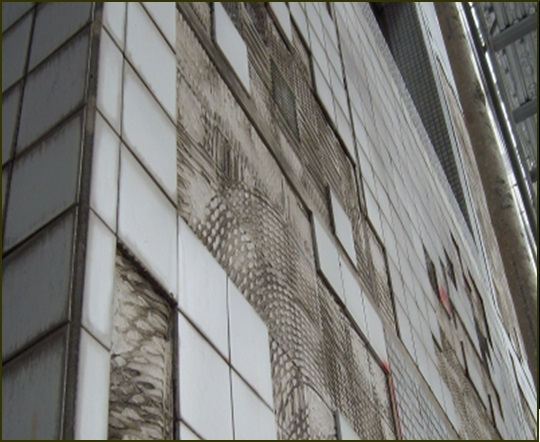
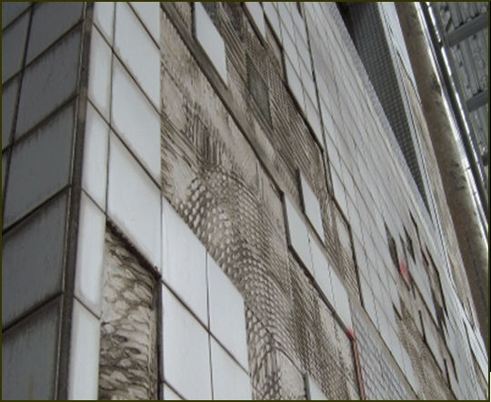
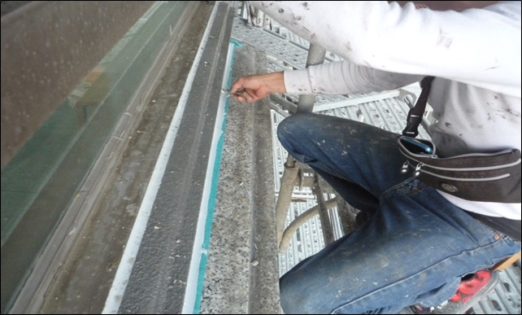
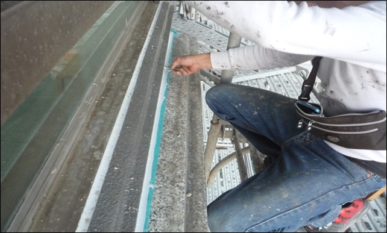

優點
1. 政府補助金額可達NT$8,480,000
2. 整體規劃設計,美化整體外牆景觀
3. 管委會將提案區權會補助每戶50%違建拆除費用
(違建未完全拆除,政府將依比例扣補助金額)
4. 全面塗料,解決外牆磁磚掉落之公安問題
5. 全面防水,解決外牆及屋頂平台漏水問題
6. 焕然一新,提升居住環境品質及房地產值
7. 若政府補助新台幣848萬元,每户分攤約38萬元
政府補助方案
1. 全面修缮
2. 總經費約 NT$42,000.000
缺點
1. 整體修繕工程費用不低
2. 相關文書工作繁多,管委會無經費支付
3. 若住戶無法達成修繕共識,恐阻擾補助申請
4. 若不願拆除違建違規物,不僅補助金額減少,也會降低外牆防水處理成效及品資
5. 施工期長
,恐有噪音,須配合施工需求措施
6. 政府申請程序繁複,若不符法規,恐有延宕
優點
1. 整體修缮工程費用較低
2. 整體規劃設計,美化部分外牆景觀
3. 相關文書工作及協調事宜大幅減少
4. 住戶無須拆除違建違規物(含冷氣移機)
5. 住戶較容易達成修缮共識,可及早施工
6. 施工期較短,住戶日常生活受影響程度較低
7. 每戶分擔約新台幣29.5萬元
完全自費方案
1. 部分修缮
2. 總經費約 NT$26,000,000
缺點
1. 無法全面搭鷹架,將承受潛在施工危险
2. 未能全面塗料,日後地震、颱風、豪雨, 磁磚仍有可能破裂/掉落,須另行花費修缮
3. 未能全面防水,日後地震、颱風、豪雨, 仍有可能造成漏水問題,須另行花費修缮
4. 未能拆除違建/違規物,恐降低修繕成效/品質
5. 無法有效提升居住環境品質及房地產值
6. 管委會將持續面臨外牆磁磚掉落及漏水問題
 

 
